אל תתנו לפגמים קטנים להרוס לכם את החוויה. ב-AUTO STUDIO אנחנו מעלימים שריטות, משחזרים את עומק הצבע, ונועלים את הברק עם ציפוי ננו קרמי מתקדם. כדי שהרכב שלכם ייראה פשוט מושלם.
שטיפות לא נכונות משאירות סימני סווירל. השמש גורמת לצבע לדהות ולאבד את הברק העמוק שלו. הפלסטיקה מתייבשת, ותא הנוסעים צובר לכלוך שקשה מאוד להסיר.
התוצאה היא רכב שנראה עייף וחסר ברק.
במקום להשלים עם המצב, ניתן לחשוף מחדש את המראה המקורי והנקי של הרכב באמצעות טיפול יסודי ונכון, ולא רק שטיפה חיצונית מהירה.
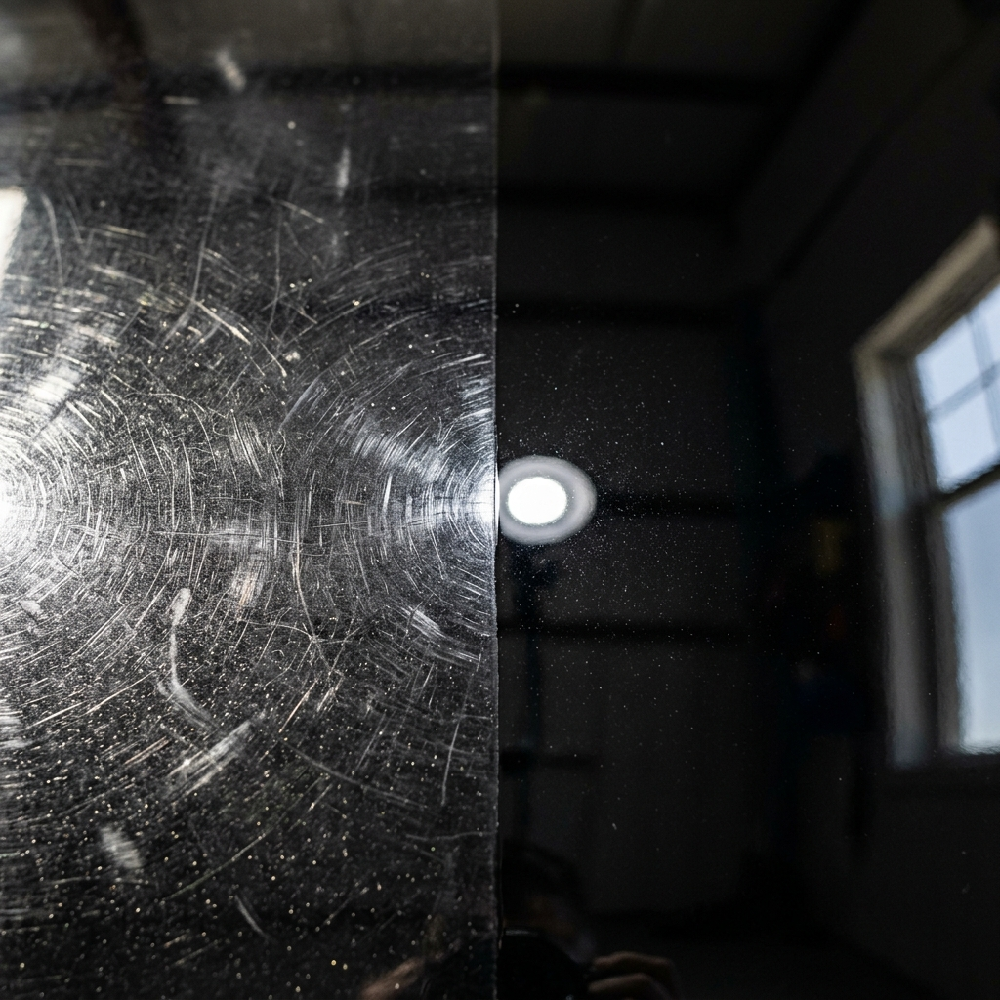
אותו רכב. טיפול אחר לגמרי.
ניקוי עמוק ויסודי של כל חלקי הרכב. התהליך כולל הסרת מזהמים ששטיפה רגילה לא מסוגלת להסיר, הכנת המשטחים והחזרת רמת ניקיון מקסימלית לפני תהליכי שיקום נוספים.
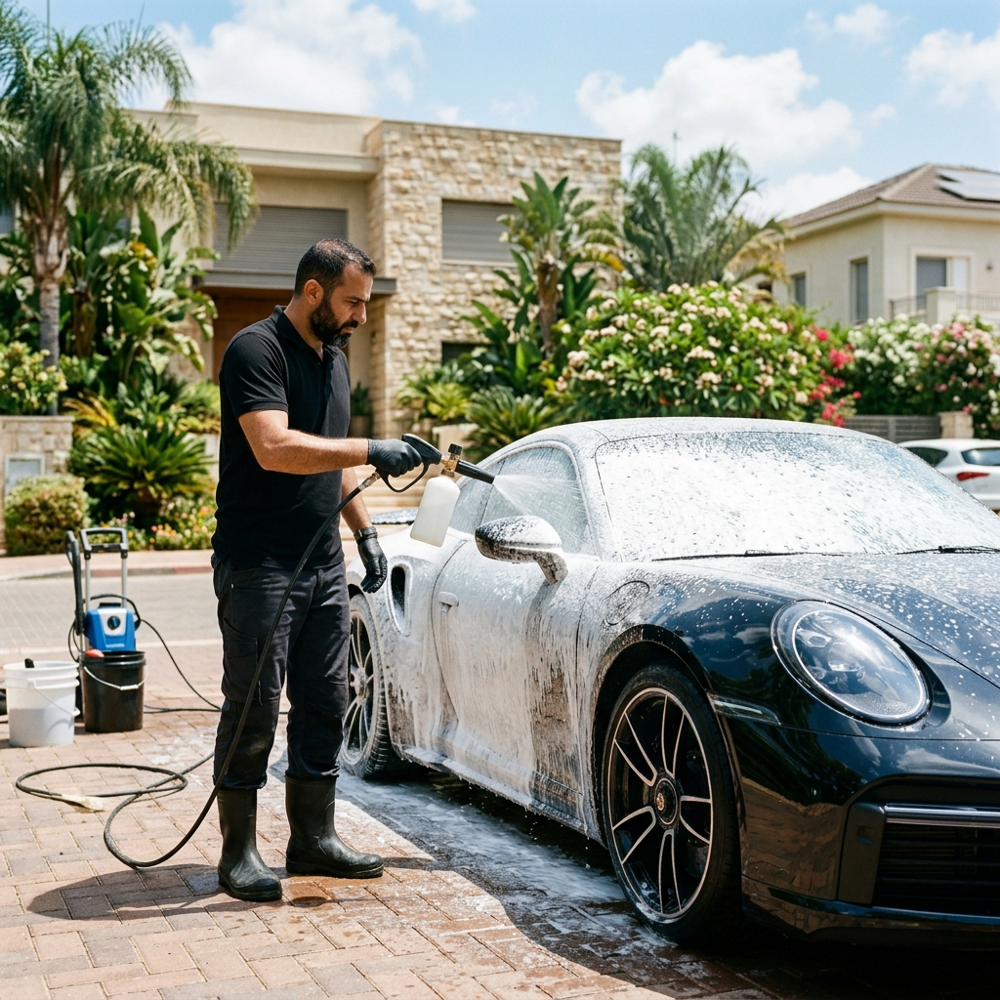
תהליך פוליש מקצועי לתיקון פגמים בשכבת הלכה. העלמת שריטות עדינות, סימני סווירל ושפשופים. התוצאה היא החזרת הברק המקורי ועומק הצבע שנעלם עם השנים.
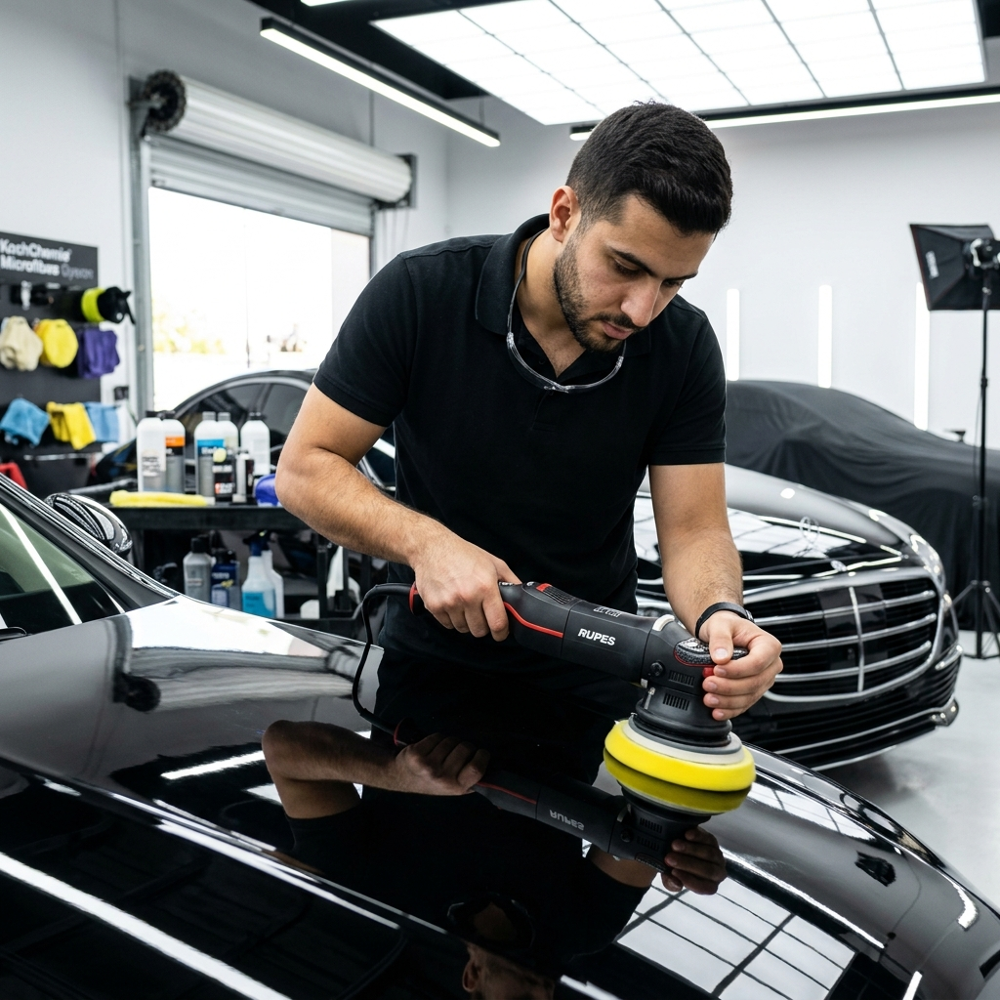
שיקום וניקוי מקיף לתא הנוסעים. ניקוי עור ובד, שאיבה יסודית לכל הפינות, חידוש פלסטיקה וטיפול שמחזיר את תחושת הניקיון והריח של רכב שמור היטב.
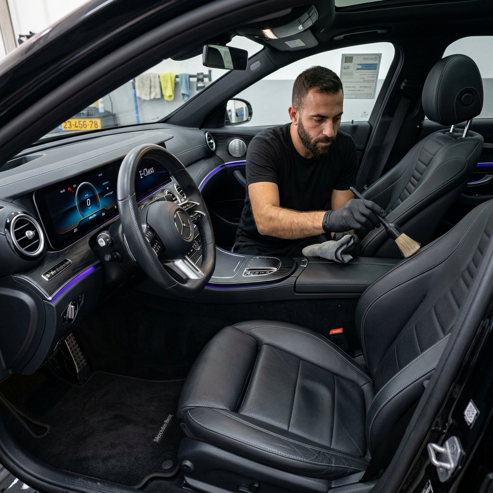
יישום ציפוי המעניק הגנה לטווח ארוך מפני נזקי סביבה וכימיקלים. הציפוי יוצר שכבה הידרופובית הדוחה מים ולכלוך, שומר על ברק הרכב ומקל משמעותית על התחזוקה השוטפת.
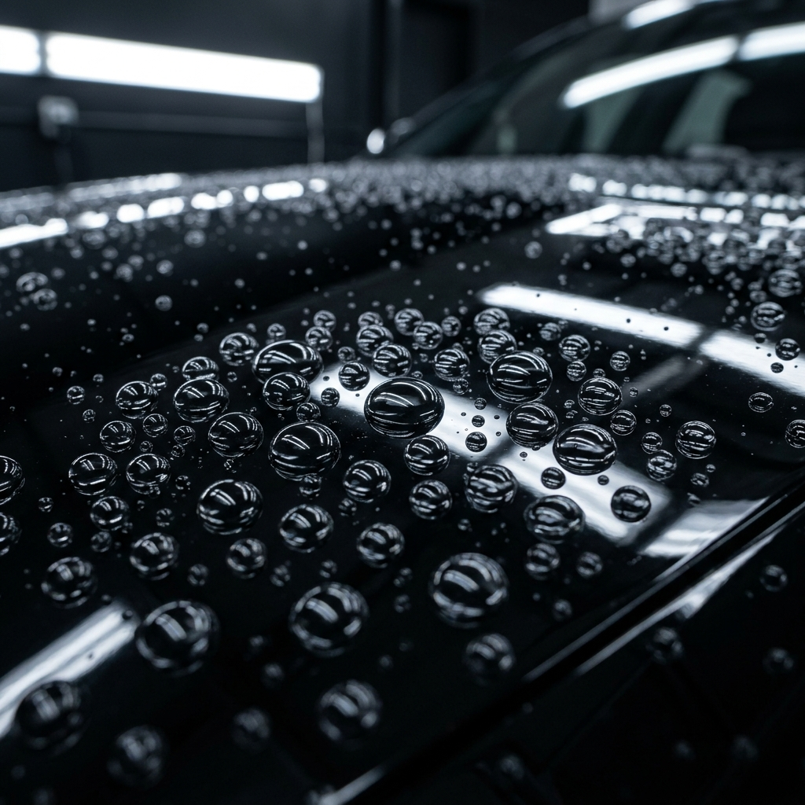
הטיפול שגורם לכם להתאהב מחדש ברכב.
חוויית טרנספורמציה מלאה. תהליך מקיף המשלב את כל הידע והמומחיות שלנו כדי להביא את הרכב למצב האופטימלי שלו.
הטיפול המדויק נקבע לאחר אבחון מצב הרכב.
בדקו אם הרכב שלכם מתאים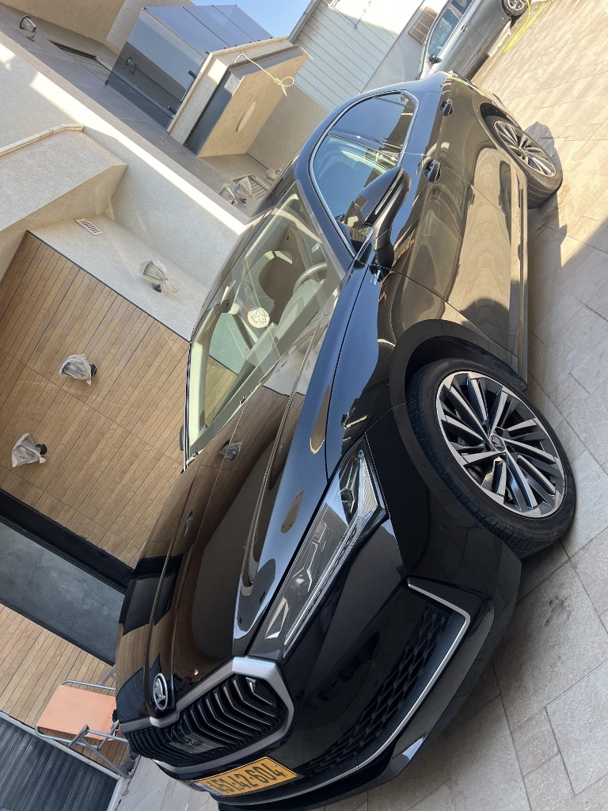
שלחו לנו 3 תמונות ונוכל לתת לכם אבחון ראשוני וטווח מחיר.
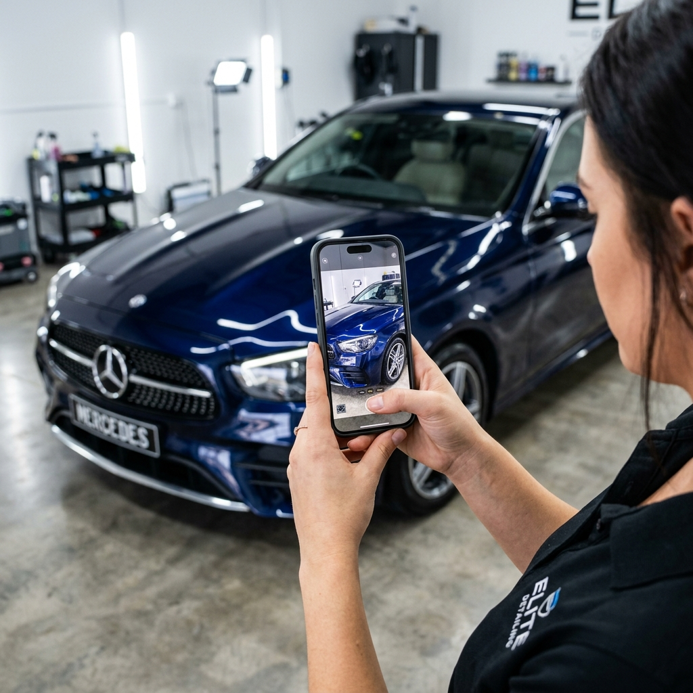
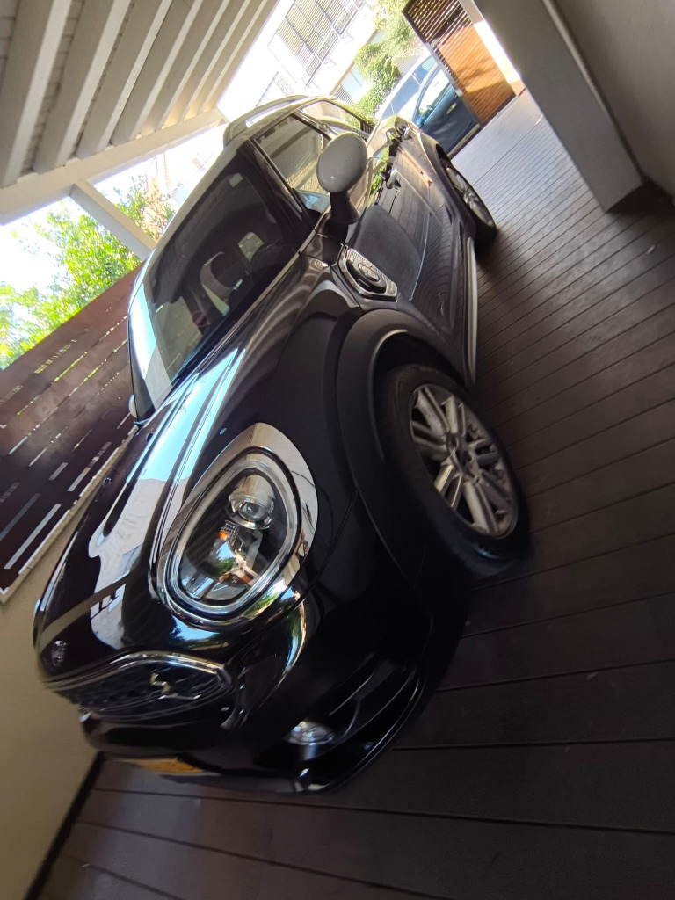
AFTER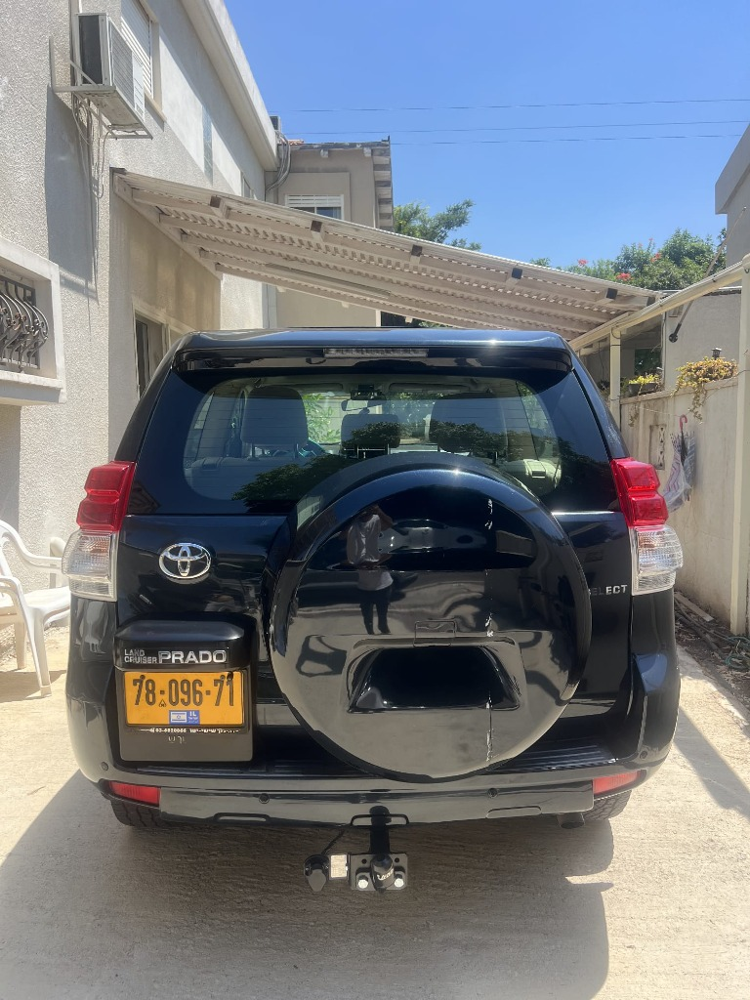
AFTER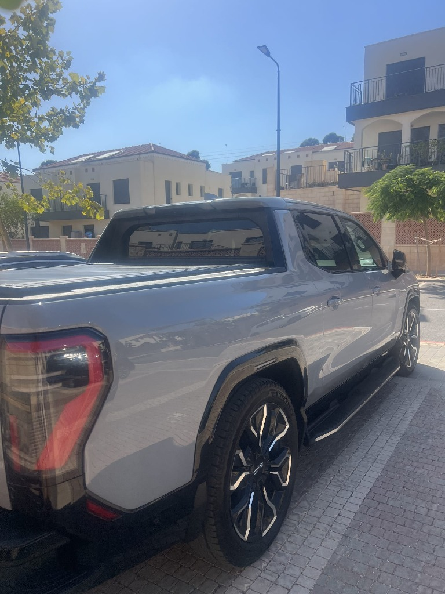
AFTER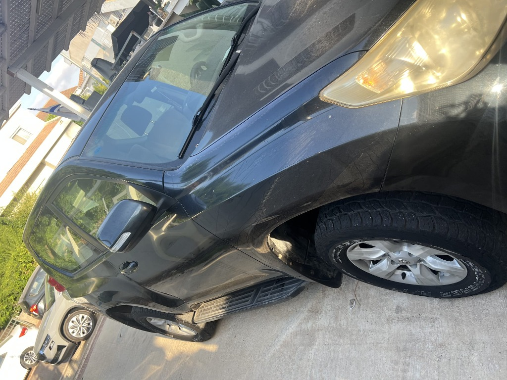
AFTERהזמן תלוי במצב הרכב ובסוג הטיפול. טיפולים קצרים יכולים להסתיים באותו יום, בעוד שחידוש צבע מלא ויישום ציפוי הגנה יכולים לארוך יומיים או יותר כדי להבטיח תוצאה מדויקת.
לא. שריטות שחדרו את שכבת הלכה והגיעו לצבע עצמו אינן ניתנות להעלמה מלאה באמצעות פוליש. המטרה היא לעדן אותן משמעותית ולשפר את המראה הכללי מבלי לסכן את עובי הלכה הנותרת.
פוליש היא פעולה ספציפית לתיקון פגמים בשכבת הלכה של הצבע. דיטיילינג הוא מונח רחב יותר שמתייחס לתהליך מקיף ויסודי של ניקוי, שיקום והגנה על כל חלקי הרכב.
ווקס מספק ברק והגנה קצרי טווח (מספר שבועות או חודשים). ציפוי קרמי יוצר שכבת הגנה עמידה וחזקה משמעותית, המשתלבת עם הלכה ומחזיקה מעמד לאורך שנים בהתאם לתחזוקה.
תלוי בסוג הציפוי שנבחר ובאופן תחזוקת הרכב לאחר מכן. טיפול נכון ושטיפות במקומות מקצועיים יכולים לשמר ציפוי קרמי איכותי למשך שנים.
אנו יכולים לספק טווח מחירים והערכה ראשונית על בסיס תמונות ברורות. עם זאת, הצעת מחיר סופית ומדויקת תינתן רק לאחר שאבחננו את הרכב פיזית בסטודיו.
בהחלט. רכבים משומשים לרוב זקוקים לטיפול הזה יותר מרכבים חדשים, והטרנספורמציה החזותית בהם היא לרוב הבולטת והמרשימה ביותר.
שלחו לנו כמה תמונות. אנחנו כבר נעזור להבין מה באמת כדאי לעשות ומה לא.
דברו איתי בוואטסאפ